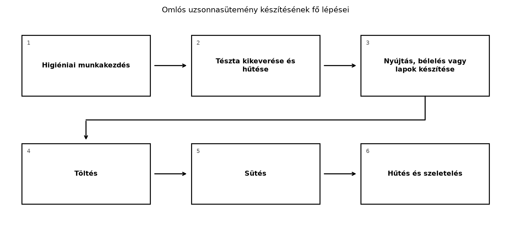

A cukrászüzemben a reggeli műszak egyik állandó feladata az uzsonnasütemények összeállítása. A vendég nemcsak tortát, hanem kisebb, kézzel fogyasztható süteményt is kér: egy tálcányi lekváros linzerszeletet, egy kockára vágott túrós pitét. Ha az omlós tészta túl vastag, a szelet ragacsossá válik; ha túl vékony, a töltelék átüti; ha a lekvár túl híg, a sütőben kifut. Ebben az alfejezetben az omlós tésztából készült uzsonnasütemények készítését tanulod meg, a nyújtástól a sütésen át az egyenletes szeletelésig.
Képzelj el egy linzerszeletet metszetben. Alul egy aranysárga, omlós tésztalap fekszik, rajta vékony, fényes gyümölcslekvár-réteg. A tetején rácsos vagy morzsás omlós tésztaréteg zár. A tészta vajban gazdag, ezért a szájban gyorsan szétomlik; a lekvár savassága ellensúlyozza a zsiradékot. A késztermék tömegét a tészta és a töltelék aránya határozza meg: étkezési minőségű omlós uzsonnasüteménynél a gyakorlatban elterjedt tájékoztató arány körülbelül tészta és töltelék (ellenőrizendő: üzemi receptúra/szakmai útmutató); a technológiai lap linzerszeletében a lekvár , a számítási példában . A pontos arányt a receptúra rögzíti.
A fejezet folyamatábrája a legfontosabb lépéseket mutatja:

Definíció. Az omlós uzsonnasütemény olyan, zsiradékban gazdag, gyúrt vagy kevert omlós tésztából készülő édes vagy sós sütemény, amelyet jellemzően tepsiben sütnek, hűlés után szeletelnek vagy adagolnak, és uzsonnás, illetve kávé mellé fogyasztanak.
Szabály. A jó omlós uzsonnasütemény alapja a hideg tésztavezetés. A vajat vagy margarint hidegen, a fehérjét lehetőleg kissé hűtve kell a lisztbe dolgozni. A tészta a formázás előtt pihenjen hűtőben, hogy a zsiradék visszadermedjen, a sikér pedig fellazuljon. Ezért a nyújtott lap zsugorodása kisebb lesz.
Higiénia. A sütésálló lekvár magas cukortartalma miatt a lekváros termék hűvös, száraz helyen tárolható; a friss gyümölcsös, túrós, tejes, tojásos töltelékű terméket viszont a sütés után gyorsan hűteni és hűtve tárolni kell (ellenőrizendő: üzemi HACCP-terv). A túrós, tejes, tojásos töltelékeknél a sütés maghőmérséklete és a gyors visszahűtés kritikus pont. A pulton melegben hagyott túrós pite felületén gyorsan szaporodhatnak a baktériumok.
Jogszabály. A túrót, tojást, tejet tartalmazó termék hűtési láncát az általános élelmiszer-higiéniai szabályok szerint fenn kell tartani; a konkrét hőmérséklet- és időértékeket az üzemi HACCP-terv és a hatályos útmutatók rögzítik (ellenőrizendő: 852/2004/EK rendelet, NÉBIH útmutató). A csomagolt vagy pultból értékesített terméken a jelölendő allergéneket fel kell tüntetni (ellenőrizendő: 1169/2011/EU rendelet II. melléklet).
Kapcsolódás. A gyúrt omlós tészták alapanyagait, kikeverését és hibáit a Gyúrt omlós tészták: sárga, barna, kakaós, angol, fehér és sós linzer alfejezetben tanultad. Itt már kész tésztából indulunk.
Az omlós tésztából készült uzsonnasütemények két alapformában készülnek:
Sima tésztalapos termékek: a kinyújtott tésztát a tepsi aljára fektetjük, a tölteléket rákenjük, majd tésztacsíkokkal, morzsával vagy rácsosra vágott lapokkal fedjük. Jellemző termék: lekváros linzerszelet, túrós omlós pite.
Kiszaggatott vagy kockára vágott termékek: a tésztából korongokat vagy téglalapokat vágunk, kettőt összetöltünk lekvárral, vagy a sütés után töltjük. Jellemző termék: lekváros ablakos linzerkarika, olcsóbb üzemi változatban kiszaggatott lapok.
A technológia lépései a munkahelyi rend szerint:
Számítás. Egy üzemben linzerszeletet készítenek. A tészta nettó tömege , a tölteléké . Sütéskor a tészta tömege -ot veszít, a töltelék -ot. Mennyi a kész, hűtött termék várható tömege?
Adott: , , , .
Keresett: .
A veszteség utáni tömeg:
Ellenőrzés: a nyers összes tömeg , a kész tömeg ennek kb. -a, ami reális omlós süteménynél.
Számítás. Egy tepsi kész tömegéből (, lásd fent) -os linzerszeleteket adagolunk. Hány darab lesz ellenőrizhetően tömegtartó?
Tehát körülbelül darabot tudunk adagolni, ha a szeletelési veszteség kicsi. A gyakorlatban a morzsalék és az egyenetlen szél miatt adagolási veszteséggel számoljunk (ellenőrizendő: üzemi norma). Így biztonságosan darabbal tervezzünk.
Jogszabály. A gyümölcslekvár megnevezését a hatályos Magyar Élelmiszerkönyv előírásai szerint akkor lehet használni, ha a termék a lekvárra vagy dzsemre vonatkozó összetételi követelményeknek megfelel (ellenőrizendő: MÉ gyümölcsdzsem, -zselé, -lekvár előírás száma). Ha a töltelék cukrozott gyümölcskészítmény, akkor a terméket „gyümölcstöltelékkel” vagy „lekvártöltelékkel” kell pontosan nevezni, nem automatikusan „lekváros”-ként. A túrós terméknél a túró megnevezését a tejtermékekre vonatkozó MÉ-előírás határozza meg (ellenőrizendő: MÉ tejtermék előírás száma).
Cél. Készíts el egy tepsinyi töltött linzerszeletet és egy hagyományőrző túrós omlós pitét.
Eszközök és anyagok: hidegkonyhai mérleg, keverőtál, univerzális konyhagép vagy kézi habverő, nyújtófa, tepsi, sütőpapír, rács, palacsintakenő ecset, hűtő, sütő, hőmérő, kés. Nyersanyagok: liszt, vaj vagy sütőmargarin, porcukor, tojássárgája, só, gyümölcslekvár, túró, tejföl, tojás, cukor, citromhéj, mazsola, zsemlemorzsa.
Higiéniai munkakezdés. Munkaruha, hajháló, ékszer levétele. Kézmosás, tiszta eszközök, fertőtlenített munkafelület. A túró és tejföl szavatosságát ellenőrizd; felbontás után hűtve tárold.
Biztonsági korlát. Az univerzális konyhagépet oktatás után és felügyelet mellett használd; működés közben ne nyúlj a tálba. A sütőt kesztyűvel nyisd; a forró tepsit jelöld. Éles késsel magadtól elfelé vágj.
1. Termék neve, csoport, alapmennyiség. Töltött linzerszelet (lekváros) és hagyományőrző túrós omlós pite; omlós tésztából készült uzsonnasütemény; alapmennyiség: 1 db, 42×30 cm-es tepsi, kihűlve 16 darab.
2. Anyaghányad (gyakorlati tanulási recept, nem hiteles eredeti recept)
| Nyersanyag | Mennyiség (g) – linzerszelet | Mennyiség (g) – túrós pite | Megjegyzés |
|---|---|---|---|
| Finomliszt | 350 | 300 | BL 55 |
| Vaj (vagy sütőmargarin) | 200 | 160 | hideg, kockázva |
| Porcukor | 120 | 90 | szitálva |
| Tojássárgája | 30 | 20 | kb. 1,5 db, ill. kb. 1 db |
| Só | 2 | 2 | |
| Citromhéj | – | 3 | reszelve |
| Gyümölcslekvár | 250 | – | híg lekvárnál sütésálló keményítő |
| Túró | – | 400 | sovány, áttörve |
| Tejföl | – | 80 | 20% zsírtartalmú |
| Tojás | – | 40 | egész |
| Cukor | – | 50 | kristály |
| Vaníliás porcukor | – | 10 | |
| Mazsola | – | 40 | beáztatva |
| Zsemlemorzsa | – | 15 | a tészta szórásához |
| Összesen | 952 | 1210 |
3. Eszközök és gépek. Keverőgép (vagy kézi), nyújtófa, tepsi, sütőpapír, rács, szilikonlapát, habkártya, hűtő, sütő, maghőmérő, kés.
4. Műveleti sorrend.
5. Kritikus pontok.
| Lépés | Veszély | Megelőzés | Kritikus határ (jelölve) | Monitorozás (dokumentum) | Helyesbítés |
|---|---|---|---|---|---|
| Túrós töltelék sütése | Mikrobák túlélése | Maghőmérséklet elérése | mag ≥ 75 °C 2 perc (ellenőrizendő) | Maghőmérő minden tételnél (sütési napló) | Visszatenni a sütőbe |
| Kész túrós pite hűtése | Utánszennyeződés, spóra szaporodás | Gyors hűtés | 2 órán belül ≤ 5 °C (ellenőrizendő) | Hűtő hőmérséklet, idő (hűtőnapló) | Edény hideg vízfürdő, adag bontása |
| Tojásos tészta kezelése | Salmonella-keresztszennyezés | Higiénia, hőkezelés | Sütés előtti hűtött tárolás ≤ 5 °C (ellenőrizendő) | Szemrevételezés, hőmérő (átvételi és tárolási napló) | Hűtőbe vissza |
6. Allergének. Glutén (búzaliszt), tojás (tojássárgája, egész tojás), tej (vaj, túró, tejföl). A gyümölcslekvár keresztszennyeződhet diófélékkel vagy mandulával, ha közös gyártósoron készült; a mazsola szulfitot tartalmazhat (kén-dioxid). A pontos összetételt a nyersanyagok specifikációja szerint kell rögzíteni.
7. Minőségi jellemzők. Forma: szabályos, tömör, nem repedezett; méret: a tepsiből adagolt darabok közel azonos tömegűek; felület: aranysárga, egyenletes, a rács nem csúszott; metszet: a tészta vékony, a töltelék tömör, nem folyik; íz: a lekvár kellemesen savanykás, a túró friss; illat: vajas, gyümölcsös; állag: a tészta omlós, a túrótöltelék krémesen kötött.
8. Tárolás, eltarthatóság. A lekvárral töltött linzerszeletet lefedve, hűvös helyen, a túrós pitét hűtve tárold. Túrós terméknél a felbontás utáni pultban tartózkodást minimalizáld, és a pultos értékesítésnél legyen külön hűtött kijelző (ellenőrizendő: hatályos útmutató).
A kész omlós uzsonnasüteményt sütés után szemrevételezéssel, tapintással, metszéssel és kóstolással ellenőrizd. A mérettűrést tömegméréssel vizsgáld: a kiválasztott darabok tömege a receptúrás tűrésen belül maradjon (ellenőrizendő: termékspecifikáció). A metszésnél a tészta ne legyen nyers, a töltelék ne legyen folyós. Ha a túrós pite teteje a hűtés után nedves, az a túl gyors lehűtés vagy a túl magas tejföl aránya miatt lehet; ilyenkor vizsgáld a fordított arányú receptúrát.
A tészta sütés közben összehúzódik, a töltelék kifut. Tünet: a kosár alakú tészta oldala lecsúszott. Ok: a tészta túl meleg volt, a zsiradék megolvadt nyújtás közben, vagy a tésztát túldolgozták. Megelőzés: hideg tészta, rövid dagasztás, pihentetés. Javítás: ha nyersen észleled, hűtsd vissza; a már kisült terméket csak morzsásra vágva mentheted.
A túrós pite közepe folyik. Tünet: a metszet közepén folyós töltelék. Ok: a maghőmérséklet nem érte el a kívánt értéket, vagy túl sok tejföl/kevés tojás. Megelőzés: maghőmérő használata, pontos mérés. Javítás: a terméket tovább sütni, ha a teteje már túl sötét, alufóliával takard.
A linzerszelet széle kiszárad, a közepe nyers. Tünet: kemény, hulló szél, nyers közép. Ok: túl magas hőfok, rossz tepsi elhelyezés. Megelőzés: légkeverés beállítása, tepsicsere a sütőben. Javítás: a hibás adagot ne keverd a jóhoz; kisebb adagban újrasüthető morzsaalapnak.
Egy tavaszi falunapra a cukrászüzemben túrós omlós pitét rendeltek, előző nap sütve, 40 darabot. A cukrász a tésztát jó minőségben elkészítette, de a túrótölteléket a sütés előtt egy órán át hűtés nélkül hagyta a meleg konyhában. Az egyik pite a sütés után lassan hűlt ki; a szállításkor a dobozban párás lett. A szállítás előtti minőségellenőrzéskor a termék teteje ragadt, és a túró enyhe savanykás illatot mutatott. A felelős a gyanús pitét selejtezte, a többi tétel maghőmérsékletét és a hűtési időt dokumentálta. A tanulság: az omlós túrós sütemény a sütés előtti és utáni hűtési fegyelmen áll; a tömeges rendelésnél a HACCP-napló vezetése védi a vendéget és az üzemet.
1. feladat (A). Nevezd meg az omlós uzsonnasütemény két alapformáját, és adj mindegyikre egy példát.
2. feladat (A). Egy túrós pite töltelékéhez 1 kg túrómassza készül. A töltelék nettó tömege sütés előtt 1,2 kg. Sütés után 1,08 kg. Számítsd ki a töltelék sütési veszteségét százalékban.
3. feladat (B). Linzerszelet készítéséhez 1 kg tésztát és 300 g lekvárt használsz. A sütés utáni összes tömeg 1,17 kg. Mennyi a teljes, nyersanyagra vetített sütési veszteség százalékban? Mennyi lekvár jut egy 45 g-os szeletre, ha a tészta és lekvár arányosan oszlik el?
4. feladat (B). Tepsiben a kész túrós pite tömege 1,6 kg. A tésztalap kész tömege 400 g. Hány százalék a töltelék tömegaránya a kész termékben?
5. feladat (C). HACCP-döntés: A sütőből kivett túrós pite maghőmérséklete 68 °C a tepsiben. A műszakvezető szerint „a tészta aranybarna, biztos jó”. Mi legyen a helyesbítő tevékenység? Írd le a döntést és az indoklást.
6. feladat (D). Készítsd el a gyakorlati útmutató alapján a túrós omlós pitét. A késztermék metszésekor figyeld meg, hogy a tészta mennyire omlós, a töltelék mennyire kötött. Töltsd ki a technológiai lap sütési és hűtési mezőit: maghőmérséklet, sütési idő, hűtőbe helyezés időpontja, hűtő hőmérséklete.
1. (a) Sima tésztalapos, például lekváros linzerszelet; (b) kiszaggatott vagy kockázott, például lekváros ablakos linzerkarika.
2. A veszteség: .
3. Nyers összes: . Veszteség: . Százalék: . A lekvár aránya a kész termékben: a sütés utáni arány azonos a nyers aránnyal, ha a tészta és a lekvár vesztesége arányos; a lekvár kezdeti aránya . Egy 45 g-os szeletben a lekvár tömege: . (Ha a veszteség nem arányos, a tésztalapra és lekvárra külön kell számolni.)
4. Töltelék kész tömege: . Arány: .
5. Helyesbítés: a pitét vissza kell tenni a sütőbe, és addig sütni, amíg a maghőmérséklet eléri a receptúrában rögzített értéket (például 75 °C-on 2 perc, ellenőrizendő). Ha a felület már túl sötét, alufóliával takard. Indoklás: a 68 °C nem garantálja a mikrobiológiai ártalom csökkentését, ezért a termék nem kerülhet forgalomba.
6. Értékelési szempontok: egyenletes 3–5 mm vastag tészta; a túrótöltelék maghőmérséklete sütés után legalább 75 °C; a metszetben a tészta omlós, a túró nem folyik; a hűtés 2 órán belül ≤ 5 °C-ra megtörtént; a technológiai lapon a hőmérséklet- és időadatok dokumentáltak.
Az omlós uzsonnasütemények tésztája hidegen marad, és rövid ideig kell dolgozni vele, hogy a vaj megőrizze a lazító-vízzáró szerepét. A tésztát nyújtás után pihentetve, egyenletes vastagságra helyezzük a tepsibe. A lekvár ne legyen híg; a töltelék aránya a nyers tömeghez képest tanulási példaként 25–45% között mozog (ellenőrizendő: receptúra; a technológiai lap linzerszeletében 26%), de a termék megnevezésekor a töltelék pontos jellege számít. A túrós piténél a sütés kritikus pont: a maghőmérséklet mérése és a gyors visszahűtés dönti el, hogy a termék biztonságosan tálalható-e. Az omlós tészta sütése közepes hőfokon, a túrós tölteléké valamivel alacsonyabb hőfokon és hosszabb idő alatt sül. A késztermék minőségét a metszetben, tömegben és érzékszervi úton ellenőrizzük; a hibás, vizes, folyós tételeket nem mentjük tovább. Ezt az egységes technológiai lapot és számítási elvet használjuk az Uzsonnasütemények anyaghányad-számítása és technológiai lapja alfejezetben is.
A fejezetben hivatkozott jogszabályok, útmutatók és szakmai követelmények: 852/2004/EK rendelet (élelmiszer-higiénia), 1169/2011/EU rendelet (fogyasztói tájékoztatás), Magyar Élelmiszerkönyv gyümölcskészítményekre és tejtermékekre vonatkozó előírásai, NÉBIH jó higiéniai gyakorlat útmutatói. Ellenőrizendő: a sütési és maghőmérsékleti határértékek a hatályos HACCP-terv szerint; a lekvár és túró megnevezési követelménye; a tömeg- és veszteségnormák; a hagyományőrző receptúra forrása; az allergénjelölés részletei. A hagyományőrző túrós pite receptjét szakkönyvi, üzemi vagy családi receptgyűjteményből adaptált tanulási receptként kezeljük, nem hiteles eredeti receptként.